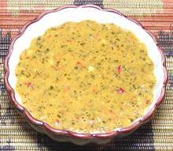

 |
Piri-Piri SauceSouthern Africa, Mozambique - piri-piri / peri-peri, etc. | ||||
| Makes: Effort: Sched: DoAhead: |
9 oz ** 25+ min Best |
Red, Yellow or Green, chili sauces of this type are important in Mozambique, Angola, South Africa, Portugal, and even India. Recipes vary, but this one from Mozambique is fairly typical. | |||
|
16 1/2 2 1 5 1/2 1/2 1/2 |
c T T cl in t c |
Red Chilis (1) Lemon Juice Cilantro Parsley Garlic Ginger Root Salt Olive Oil |
Many photos show a bright red sauce. If you want that color add some larger Red Fresno chilis and skip the herbs. Make - (25 min - plus aging to 3 days)
|